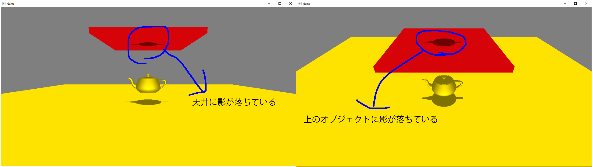
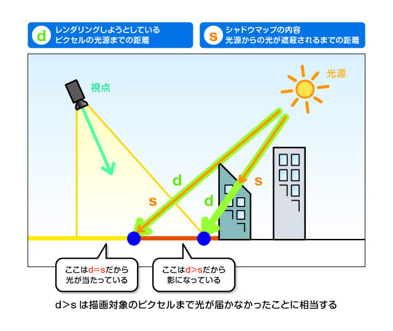
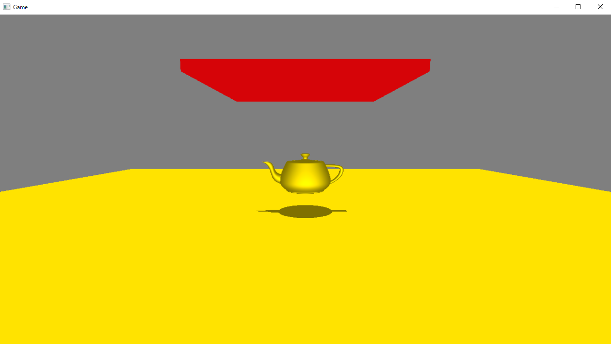

-## はじめに このチャプターでは、次のサンプルプログラムを利用します。ダウンロードをしてください。
11.2では投影シャドウを進化させたデプスシャドウ技法について見ていきましょう。
11.1でシンプルな影生成技法の投影シャドウについて見ていきました。シンプルな考え方でリアルな影を生成することができるため、今でもゲームによっては採用されることがある影生成技法です。しかし、投影シャドウには次のような欠点があります。
投影シャドウは単純にモデルにシャドウマップを貼り付けているだけなので、図11.11のように本来影が落ちない場所に影が落ちてしまいます。 図11.11  これと同様の原因として、自分自身に影を落とすセルフシャドウも行うことができません。今回のケースで言えば、ティーポットにティーポット自身の影を落とすことができないということです。デプスシャドウ技法を使うと、これらの問題を解決することができます。
Sample_11_03/ShadowProjection/Game.exeを実行すると、投影シャドウの問題点について確認することができるので、こちらも試してみてください。コントローラーの左スティックの入力でカメラを動かすことができます。
デプスシャドウは投影シャドウの考え方を発展させたものとなります。アルゴリズム的にもシャドウマップを作成して、それを利用して影を落とすという処理になるため、投影シャドウととてもよく似ています。投影シャドウとの違いは、シャドウマップに描き込む値が、グレースケールではなく、ライトスクリーン空間でのZ値を描き込むというて点です。Z値、ライトスクリーン空間での深度値、デプスを描き込むめ、デプスシャドウと呼ばれます。デプスシャドウは「影はライトの光が遮られている場所に落ちるはずなので、影が落ちる箇所には、手前に遮蔽物があるはず」という考え方から影を落とします(図11.12)。 図11.12 
モデルを描画する際に、シャドウマップに描き込まれた深度値を使って、ピクセルが遮蔽されているかどうかを判定します。
では、Sample_11_03/Sample_11_03.slnを改造して、デプスシャドウを実装しましょう。実装は投影シャドウを少し改造するだけです。今回は投影シャドウから改造した点に注目して実装を行っていきます。
まずは、シャドウマップ描画用のレンダリングターゲットを作成します。変更点はカラーバッファのフォーマットです。今回は数値の精度が欲しかったのと、深度情報のみを描き込むため、G(緑)B(青)A(α)の成分は不要なので、R(赤)のみの32bit浮動小数点フォーマットにしています。では、main.cppの36行目にリスト11.14のプログラムを入力してください。 [リスト11.14 main.cpp]
//step-1 シャドウマップ描画用のレンダリングターゲットを作成する。
float clearColor[4] = { 1.0f, 1.0f, 1.0f, 1.0f };
RenderTarget shadowMap;
shadowMap.Create(
1024,
1024,
1,
1,
//【注目】シャドウマップのカラーバッファのフォーマットを変更している。
DXGI_FORMAT_R32_FLOAT,
DXGI_FORMAT_D32_FLOAT,
clearColor
);
続いて、シャドウマップに描画するモデルの初期化処理を実装します。ここでの変更点もカラーバッファのフォーマットの変更に起因するものです。DirectX12では、ドローコールを実行する際にパイプラインステートというものを指定する必要があるのですが、このパイプラインステートの設定に、描き込むカラーバッファのフォーマットというものがあります。この設定のための変更があります。main.cppにリスト11.15のプログラムを入力してください。 [リスト11.15 main.cpp]
//step-2 シャドウマップに描画するモデルを初期化する。
ModelInitData teapotShadowModelInitData;
//シャドウマップ描画用のシェーダーを指定する。
teapotShadowModelInitData.m_fxFilePath = "Assets/shader/sampleDrawShadowMap.fx";
teapotShadowModelInitData.m_tkmFilePath = "Assets/modelData/teapot.tkm";
//【注目】カラーバッファのフォーマットに変更が入ったので、こちらも変更する。
teapotShadowModelInitData.m_colorBufferFormat[0] = DXGI_FORMAT_R32_FLOAT;
Model teapotShadowModel;
teapotShadowModel.Init(teapotShadowModelInitData);
teapotShadowModel.UpdateWorldMatrix(
{ 0, 50, 0 },
g_quatIdentity,
g_vec3One
);
step-3はシャドウマップ書き込み用のシェーダー側の変更です。まずは、シャドウマップに書き込む値をライトカメラスクリーン空間でのZ値に変更します。Assets/shader/sampleDrawShadowMap.fxの56行目にリスト11.16のプログラムを入力してください。
[リスト11.16 sampleDrawShadowMap.fx]
//step-3 シャドウマップにZ値を描き込む。
return float4( psIn.pos.z, psIn.pos.z, psIn.pos.z, 1.0f);
ちなみにここでは、psIn.pos.zをpsIn.pos.wで除算していません。これは、SV_POSITIONのセマンティクスが指定されているパラメーターはwで除算済みのデータとして、ピクセルシェーダーに渡されるためです。
step-4からは影を受けるモデル用のシェーダーの変更です。まずは、影を受けるモデルのライトビュースクリーン空間でZ値を計算します。Assets/shader/sampleShadowReciever.fxの70行目にリスト11.17のプログラムを入力してください。
[リスト11.17 sampleShadowReciever.fx]
//step-4 ライトビュースクリーン空間でのZ値を計算する。
float zInLVP = psIn.posInLVP.z / psIn.posInLVP.w;
これで最後です。step-4で描画したいピクセルのライトビュースクリーン空間でのZ値を求めることができたので、シャドウマップに書き込まれているZ値と比較を行って、遮蔽されているようであれば、影を落とすプログラムを実装します。sampleShadowReciever.fxにリスト11.18のプログラムを入力してください。 [リスト11.18 sampleShadowReciever.fx]
//step-5 シャドウマップに描き込まれているZ値と比較する。
//計算したUV座標を使って、シャドウマップから深度値をサンプリング
float zInShadowMap = g_shadowMap.Sample(g_sampler, shadowMapUV).r;
if( zInLVP > zInShadowMap ){
//遮蔽されている。
color.xyz *= 0.5f;
}
ここまで実装出来たら実行してみて下さい。うまく実装できていると、図11.13のようなプログラムが実行できます。ティーポットの上の赤いオブジェクトに影が落ちないようになっているはずです。 図11.13 
次の評価テストを行いなさい。 評価テストへジャンプ